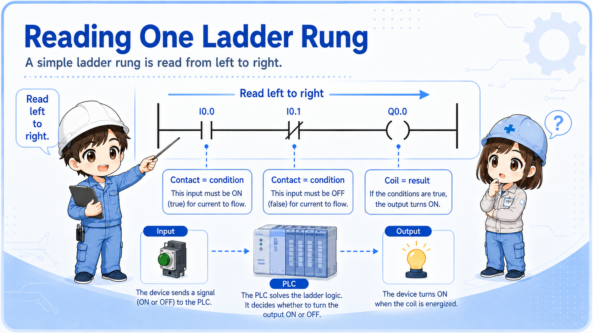
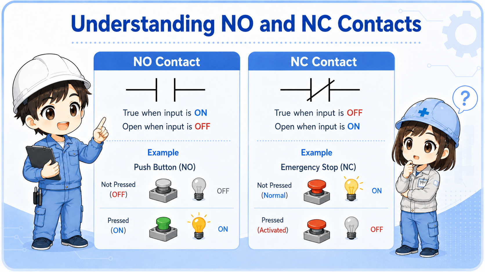
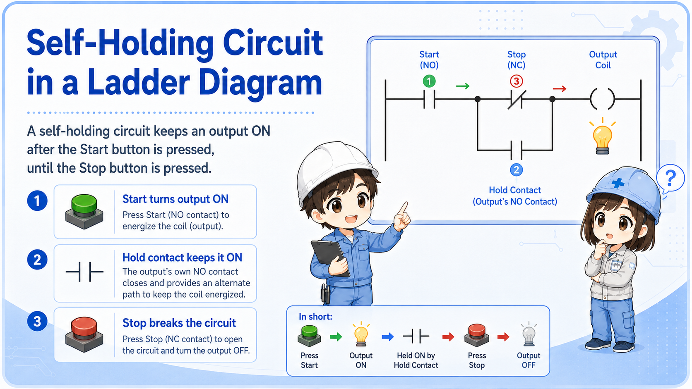
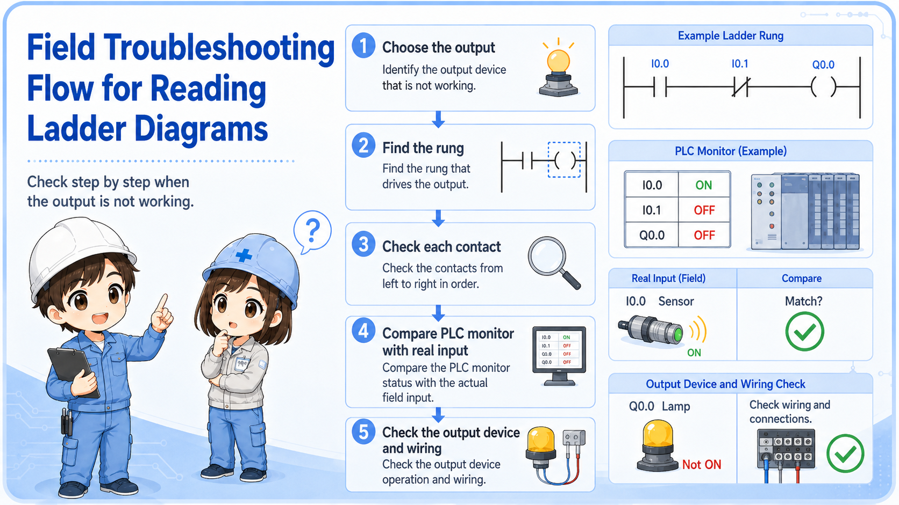

1. Start with one rung, not the whole program
A ladder diagram becomes easier when you read one horizontal line at a time.
A ladder diagram is a way to show control logic using contact and coil symbols. Beginners often try to understand the whole program at once, but that makes the drawing feel much harder than it really is.
The basic reading direction is left to right. The contacts on the left side are conditions. If the conditions are satisfied, the coil or output on the right side can turn ON.


Do not start by trying to understand every rung. Pick one output and trace only the conditions related to that output.

So I should choose one lamp, relay, or output first, then trace why it turns ON.
2. Contacts are conditions
NO and NC contacts do not mean “good” or “bad.” They show how the condition is evaluated in the logic.
In ladder logic, a contact is a condition. A normally open contact is true when the related bit or input is ON. A normally closed contact is true when the related bit or input is OFF. This is different from simply looking at whether a physical switch is pressed.
When reading, ask: What condition must be true here? Then compare that with the real input, relay, sensor, or internal bit.
| Symbol idea | How to read it | Beginner check |
|---|---|---|
| NO contact | True when the referenced bit/input is ON. | Check whether the input lamp or monitor is ON. |
| NC contact | True when the referenced bit/input is OFF. | Do not assume it is a fault; it may be an intentional OFF condition. |
| Series contacts | All conditions must be true. | One false condition stops the rung from becoming true. |

3. Coils are results
The coil on the right side shows what the rung is trying to turn ON.
A coil may represent a real PLC output, an internal relay, a memory bit, or another logical result. If all required contacts are true, the coil can turn ON. If the coil is a real output, it may drive a lamp, relay, solenoid valve, buzzer, or contactor through the output circuit.
For troubleshooting, separate the PLC logic state from the field device. A coil may be ON in the monitor, but the real lamp may still be OFF because of wiring, output module, common, fuse, or device failure.
Logic result
Is the output coil or internal bit ON in the PLC monitor?
Real output
Does the output module LED or terminal voltage match the logic state?
Field device
Is the lamp, relay, valve, or buzzer actually receiving power?
Drawing match
Confirm the address, terminal, common, and wiring route on the real drawing.
4. Self-holding rungs are easier when split into start and hold paths
A self-holding circuit keeps the output ON after the start input turns OFF.
In a typical self-holding rung, the start button turns the output ON first. Then an auxiliary contact or internal bit creates a parallel hold path. The stop button or reset condition breaks the rung and turns the output OFF.
When reading this kind of rung, split it into two paths: start path and hold path. This makes it much easier to understand why the output remains ON.

Do not read only the start button
If the output stays ON after the start button is released, look for the holding contact or internal bit that keeps the rung true.
5. Common mistakes when reading ladder diagrams
Most beginner confusion comes from mixing symbols, real wiring, and current machine state.
- Trying to read the whole program instead of one rung or one output.
- Thinking an NC contact always means a broken or closed physical switch.
- Looking only at the coil without checking the contacts that make it true.
- Assuming an output device is good because the PLC coil is ON.
- Ignoring interlock, reset, stop, alarm, or safety-related conditions.
- Changing the program before confirming the real input and output status.
Be careful with safety-related circuits
This article explains the basic reading method. Safety circuits, emergency stop circuits, and interlocks must be checked according to the machine manual, site rules, and applicable safety requirements.
6. Field reading flow
A practical reading order is output → rung → contacts → real inputs → real output device.
When troubleshooting, choose the output that is not behaving as expected. Then find the rung that controls it. Check each contact condition in order, and compare the PLC monitor with the real machine condition.

1. Choose output
Pick the lamp, relay, valve, motor signal, or buzzer to check.
2. Find rung
Locate the coil or output address in the ladder diagram.
3. Check contacts
Read each condition from left to right and compare with real inputs.
7. Quick summary
Ladder reading is not memorizing every symbol. It is tracing conditions to a result.
Start with one rung. Read from left to right. Treat contacts as conditions and coils as results. Then connect the ladder state to the real machine: inputs, outputs, wiring, and field devices.
Remember this
If you get lost, choose one output and ask: “What conditions must be true for this output to turn ON?”
Related articles
These English articles are useful next steps after learning how to read ladder diagrams.